Trend-terminal box gate — the 21 boxes the flag removes
Measured against payload 2026-08-12 (824f44c9ed2c). Rendered gate-OFF: each chart is
the box as it exists today, the one the gate would refuse. Class A = the
trend topped inside the box's first 10 bars (the LIVN case).
Class B = an upthrust inside a range that had already worked (the
contested class). Full numbers in LOSSES.md.
AWRclass A
box 2026-07-08 · R 90.11 / S 82.58 · base_len 26 · climax 2026-07-20 · 18 bars since · climax at box-bar 8
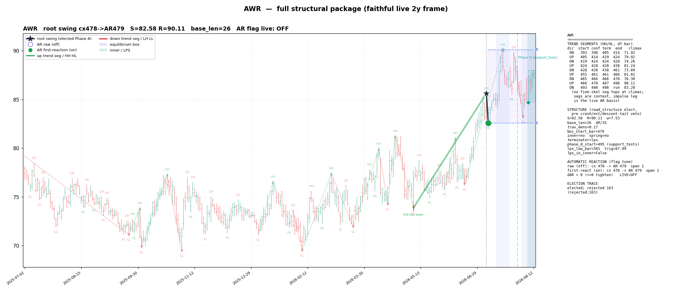
BALLclass B
box 2026-07-06 · R 63.94 / S 59.94 · base_len 28 · climax 2026-07-28 · 12 bars since · climax at box-bar 16
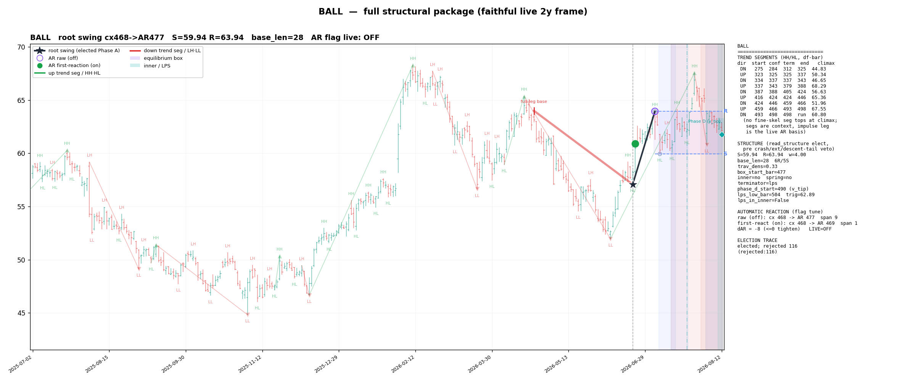
BCSclass B
box 2026-06-24 · R 28.43 / S 26.52 · base_len 35 · climax 2026-07-27 · 13 bars since · climax at box-bar 22
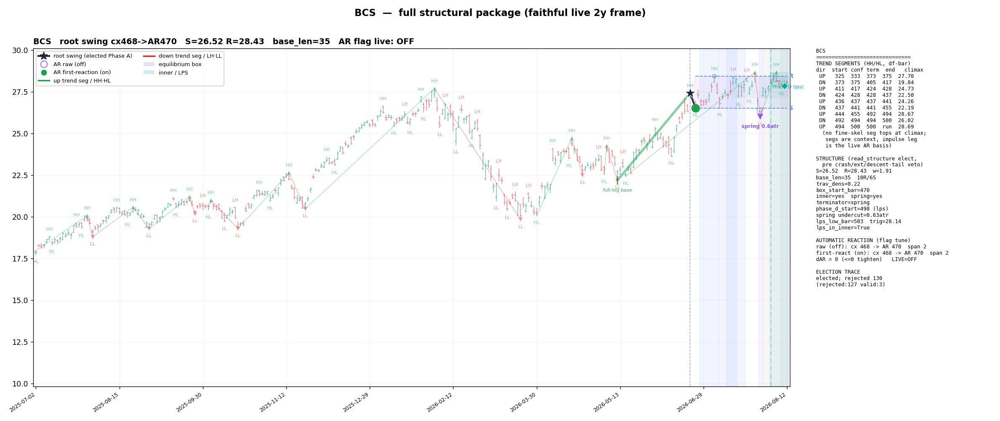
BMRCclass B
box 2026-07-09 · R 29.53 / S 28.01 · base_len 25 · climax 2026-07-27 · 13 bars since · climax at box-bar 12
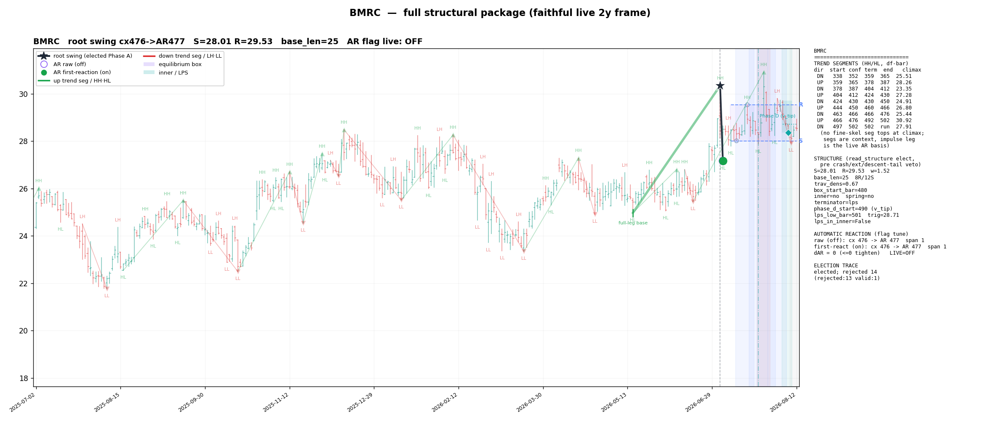
CDPclass B
box 2026-07-07 · R 38.06 / S 36.19 · base_len 27 · climax 2026-07-29 · 11 bars since · climax at box-bar 16
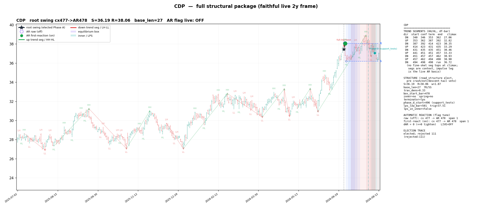
CNIclass A
box 2026-07-21 · R 131.55 / S 125.13 · base_len 17 · climax 2026-07-24 · 14 bars since · climax at box-bar 3
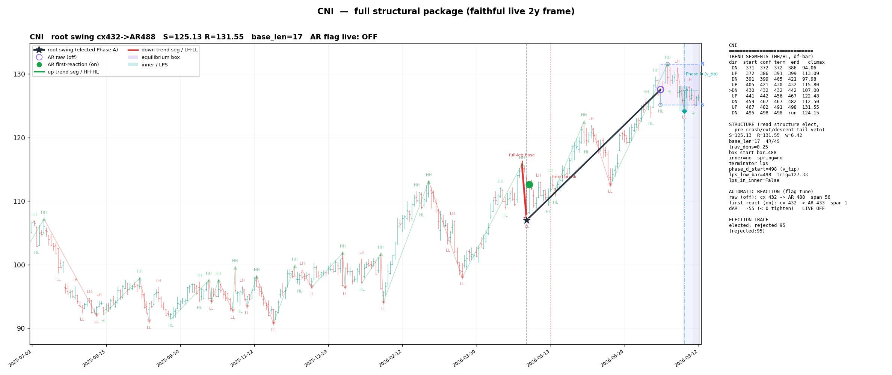
CWTclass B
box 2026-07-09 · R 52.51 / S 48.93 · base_len 25 · climax 2026-07-30 · 10 bars since · climax at box-bar 15
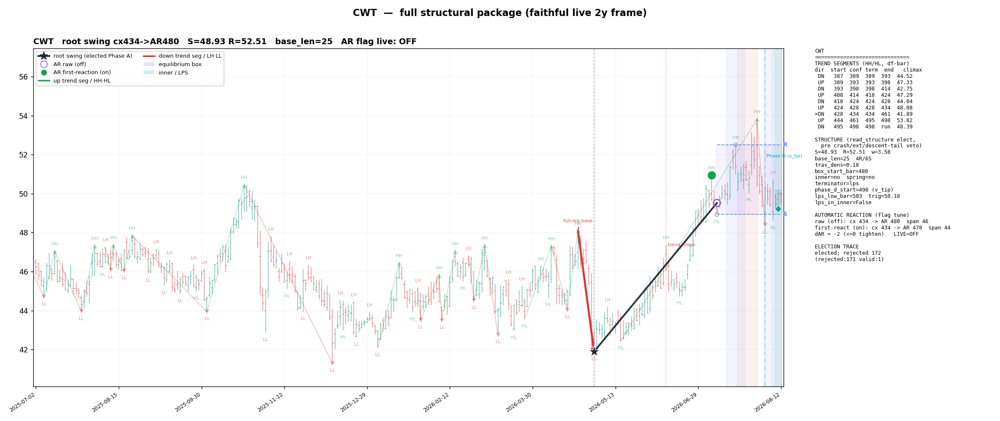
DINclass B
box 2026-06-23 · R 36.97 / S 33.02 · base_len 36 · climax 2026-07-17 · 19 bars since · climax at box-bar 17
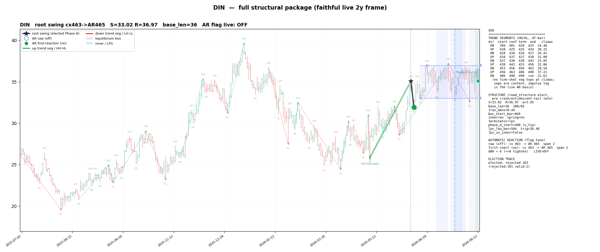
EVERclass A
box 2026-07-07 · R 27.46 / S 24.05 · base_len 26 · climax 2026-07-21 · 16 bars since · climax at box-bar 10
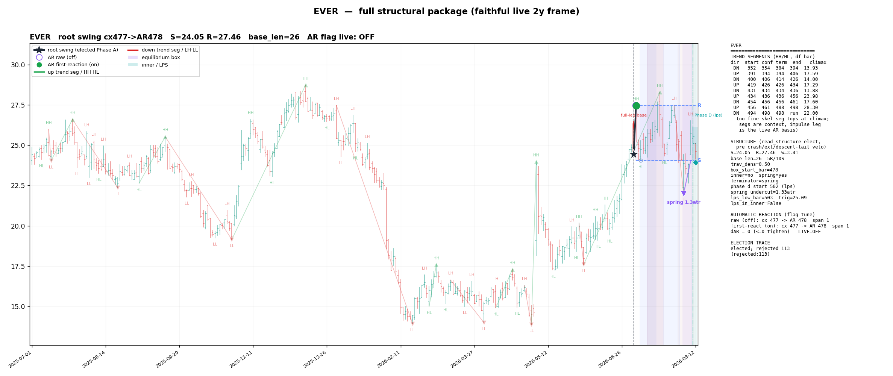
IMOclass A
box 2026-07-24 · R 129.59 / S 124.01 · base_len 14 · climax 2026-07-31 · 9 bars since · climax at box-bar 5
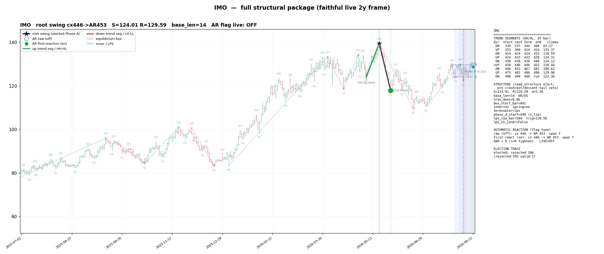
KMXclass A
box 2026-07-20 · R 59.34 / S 55.73 · base_len 18 · climax 2026-07-29 · 11 bars since · climax at box-bar 7
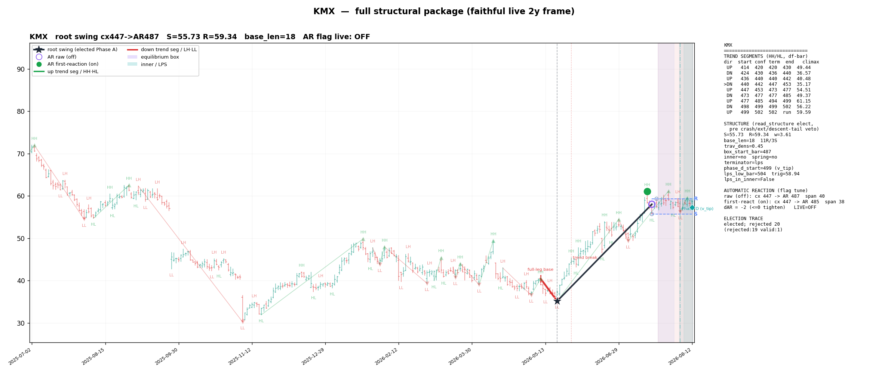
KNclass A
box 2026-07-07 · R 37.58 / S 33.79 · base_len 26 · climax 2026-07-17 · 18 bars since · climax at box-bar 8
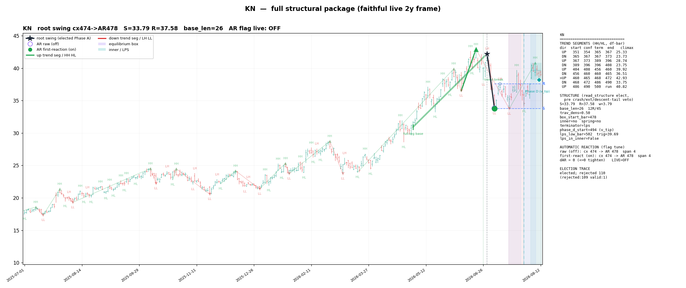
NATclass A
box 2026-07-24 · R 6.60 / S 6.18 · base_len 14 · climax 2026-07-31 · 9 bars since · climax at box-bar 5
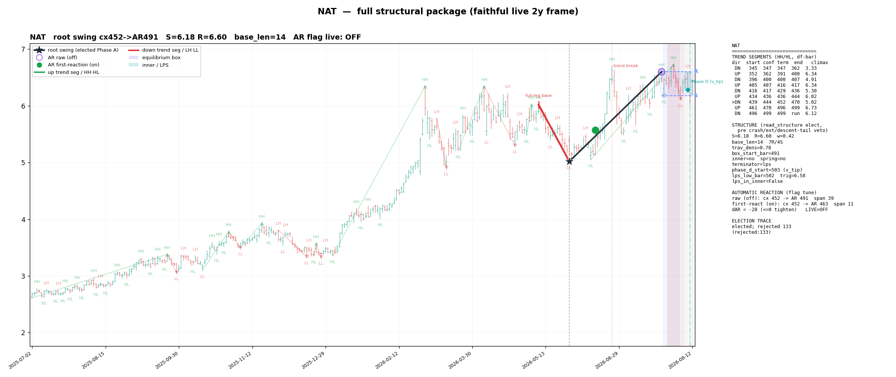
NPOclass A
box 2026-07-10 · R 336.79 / S 307.95 · base_len 24 · climax 2026-07-17 · 19 bars since · climax at box-bar 5
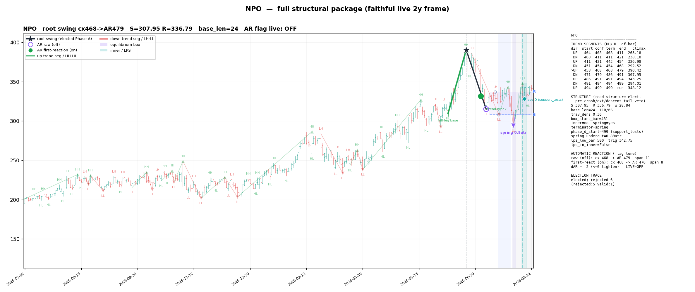
OSKclass B
box 2026-06-17 · R 155.56 / S 138.14 · base_len 39 · climax 2026-07-28 · 12 bars since · climax at box-bar 27
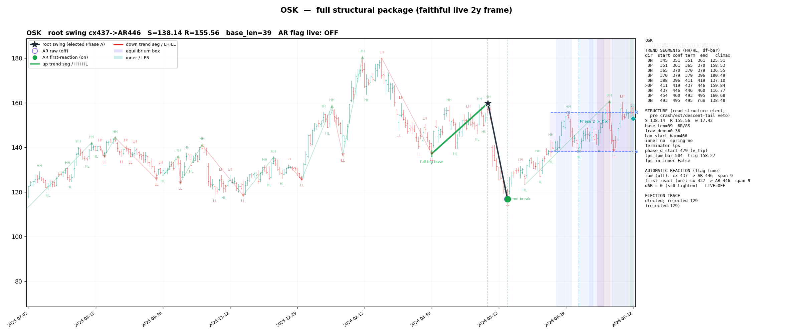
SNAclass A
box 2026-07-06 · R 414.62 / S 396.59 · base_len 28 · climax 2026-07-17 · 19 bars since · climax at box-bar 9
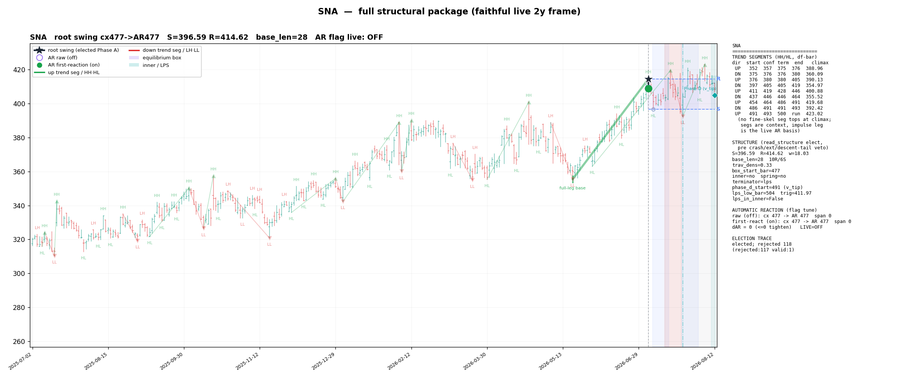
SXCclass A
box 2026-07-17 · R 9.44 / S 8.23 · base_len 19 · climax 2026-07-29 · 11 bars since · climax at box-bar 8
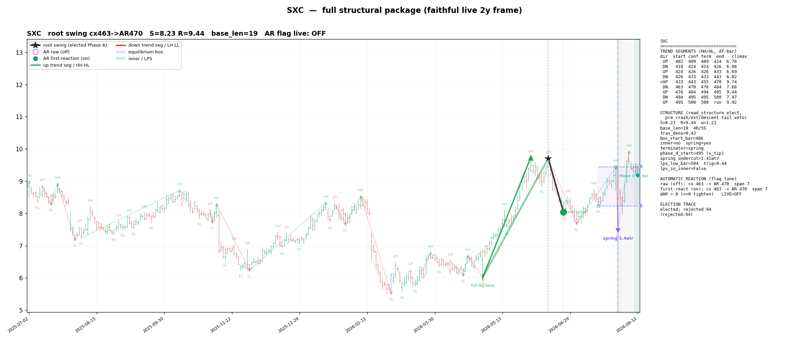
TFINclass B
box 2026-06-29 · R 80.47 / S 74.46 · base_len 31 · climax 2026-07-22 · 15 bars since · climax at box-bar 16
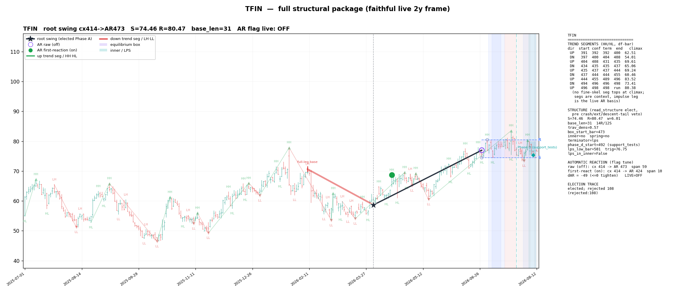
UTLclass B
box 2026-07-01 · R 55.59 / S 52.09 · base_len 30 · climax 2026-07-28 · 12 bars since · climax at box-bar 18
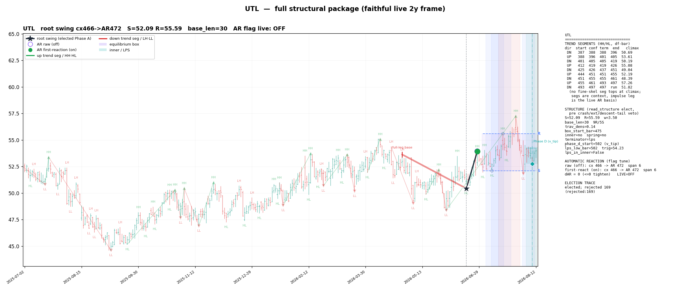
WFCclass A
box 2026-07-07 · R 88.68 / S 85.10 · base_len 27 · climax 2026-07-17 · 19 bars since · climax at box-bar 8
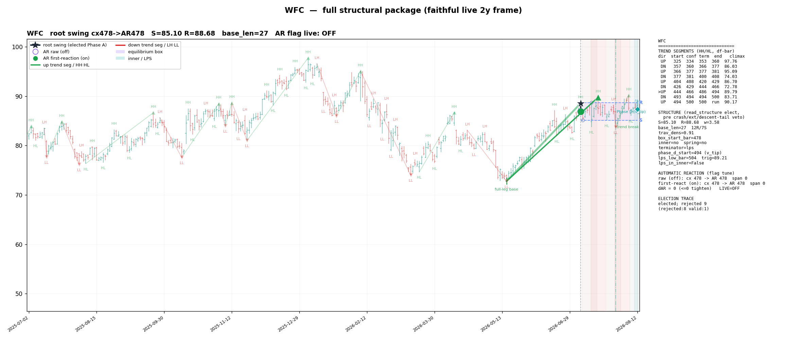
XOMclass A
box 2026-07-24 · R 158.71 / S 151.88 · base_len 14 · climax 2026-07-29 · 11 bars since · climax at box-bar 3
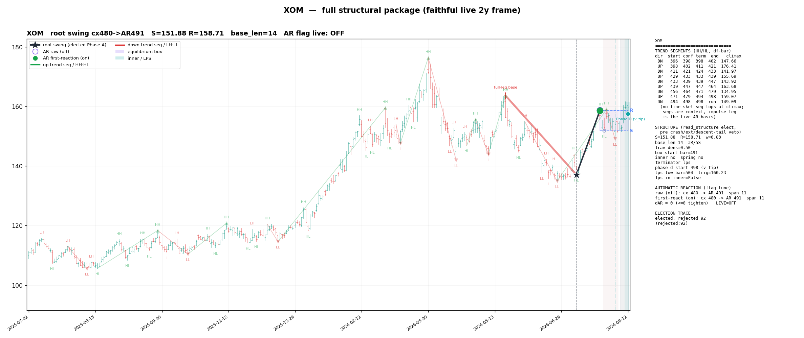
APHclass moved
box 2026-07-09 · R 164.89 / S 146.04 · base_len 25 · climax ? · ? bars since · climax at box-bar ?